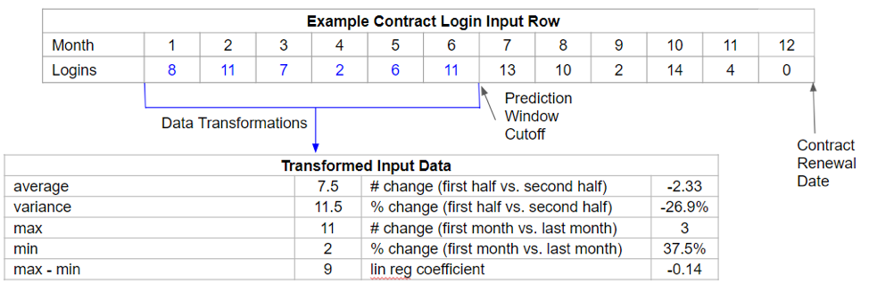
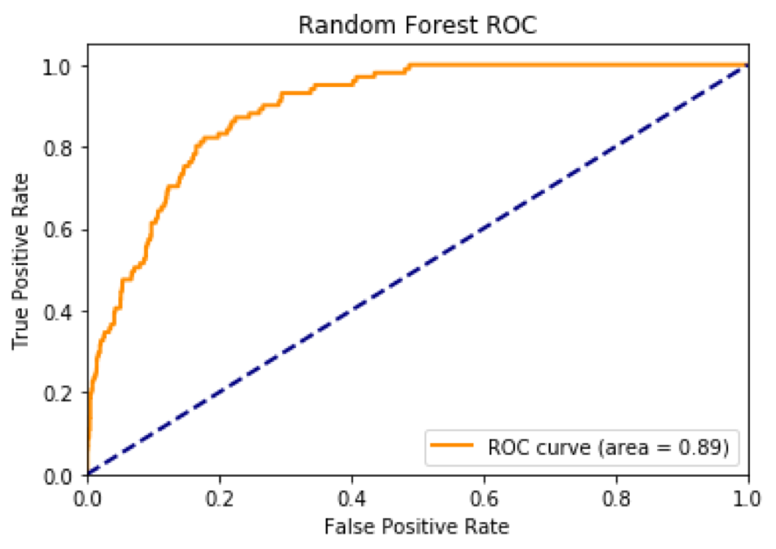
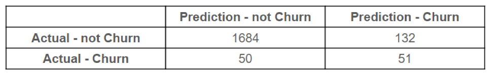
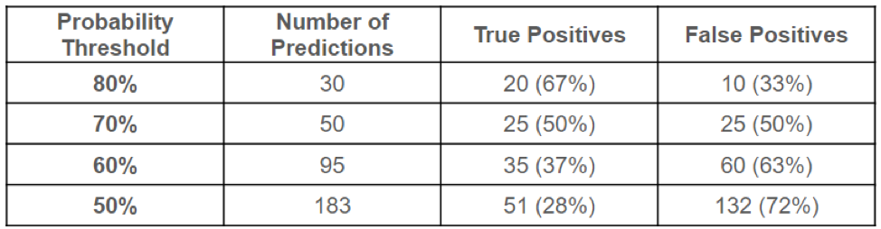
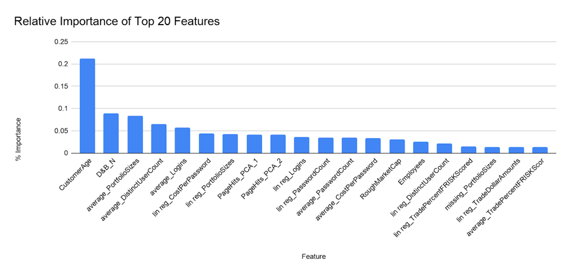

Customer-At-Risk Model for CreditRiskMonitor
Developed a Churn Model using Random Forest using H2o
Problem Definition
In this project, we worked with our client, CreditRiskMonitor, a company that provides financial risk and news monitoring as a subscription service. Churning users represent a significant cost for CreditRiskMonitor given it’s subscription model and the value associated with renewals. Thus, it is important to create a data-driven model that categorizes high attrition risk customers and key factors that correlate with that higher risk profile. Based on such a model, CreditRiskMonitor could organize its resources according to these factors and optimize retention efforts. To predict customers with high risk of churning and give time for our client to retain these customers, we decided to do predictive analysis on the data 6 months in advance of the contract renewal dates to identify the customers that are most likely to cancel their subscriptions at next renewal. Using the model, we can provide recommendations to CreditRiskMonitor on how to mobilize its resources. We thought customer longevity, contract size and user activity levels would be key factors.
Exploratory Analysis
For this analysis, CreditRiskMonitor provided us with a dataset that contained contract details for all of their clients over the past 5 years.
This dataset included descriptive characteristics about each client (e.g. number of employees, market capitalization, geography, previous contract count) as well as product engagement metrics (e.g. logins, page views, etc.)
In an effort to better understand the dataset, we conducted an exploratory analysis which yielded the following observations:
- Contracts that were held by more tenured clients had lower churn rates.
- Contracts that paid for less seats had higher churn rates.
- Contracts associated with greater user engagement, as measured by monthly user logins, had lower churn rates.
- Clients that were on non-standard contracts (duration greater than 12 months) had higher churn rates.
Data Pre-Processing
The data cleaning process consisted of the following steps:
- Separate the data for clients into individual rows for each contract renewal period (12-15 months)
- Define churn as two consecutive months without renewal after a contract expires, and create a binary classification variable
- Isolate the input data for the first half of the contract period and compute summary transformations (eg. average, min, max, % change) as follows:

- For Page Hits data, use Principal Components Analysis to reduce the number of features from 106 to 2
- For NA values, add a new boolean variable to indicate missing data and then fill the NA value with 0, assuming that NAs indicate little to no activity
- Create dummy variables for categorical variables
- Remove rows with poor data quality (negative values, percentages above 100%, contract lengths outside range)
Model
The method used for the churn model was Random Forest due to its easy interpretability. Four hyper-parameters (max depth of trees, split criterion, minimum samples per leaf, minimum samples to split) were tuned using grid search, and 10-fold cross-validation was used to control overfitting. The score used for the model was F1 as the main focus was to predict customer churn, namely the true positives.
Our best model has 0.89 AUC and 0.36 F1.

Out of the 101 churn cases, the model was able to capture half of the customers who churned.

If we only look at the first 20 predictions sorted in decreasing order by the probabilities produced by the model, the performance of the model enhanced as 20 out of 30 predictions are actual future churned users. This translated to a true positive rate of 67%.

Random Forest also shed light on what the important customer attributes were when evaluating their likelihood to churn. The most important one was customer age, how long the customer has been using the product, which is a proxy of customers’ loyalty.

Conclusion
Our recommendation to the management team at CreditRiskMonitor is to implement a “Customer-At-Risk Retention” program with the following components:
- Incorporate the model within the account management software in a way that each account that is “at-risk” of churning in 6 months gets flagged and a notification is sent to the account managers
- The optimum threshold should be set by CRM based on the likely success rate of the account managers to retain customers-at-risk
- Account Managers should then reach out to the subscribers asking for discussions about how they are using the service and ways to improve the perceived value proposition. Depending on the user feedback account managers can do the following:
- Provide training on the best use practices
- Provide training on how the FRISK® score functions
- Send more marketing nurtures
- Conduct new training with the users
- Seek out new users at the subscriber (either in the same department or in different ones)
- Potentially travel to the subscriber for an in-person meeting (rare)
- Consider discounting a renewal price to maintain the contract
Additionally, CreditRiskMonitor should also take the following steps:
- Focus retention efforts on customers in their first year of using the service
- Identify the common reasons that account managers are resorting to non-standard contracts and incorporate stricter guidelines on offering an extra 3 months